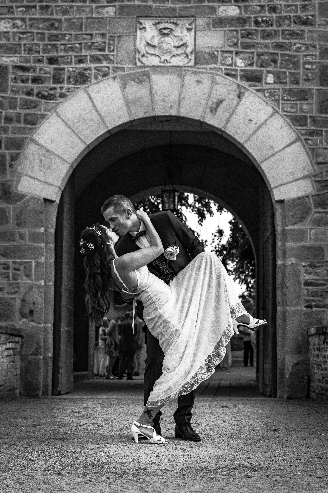

<main>
    <section id="sobre-mi" class="seccion-perfil">
        <div class="perfil-container">
            
            <div class="perfil-texto">
                <h2>Sobre mí</h2>
                <p>Arquitecta con enfoque en la narrativa visual.</p>
                <p>Basada en Sevilla.</p>
            </div>
        </div>
    </section>

    <hr class="divisor">

    <section id="arquitectura">
        <h2 class="titulo-seccion">Arquitectura</h2>
        <div class="grid">
            <a class="galeria" href="foto1.jpg"></a>
            <a class="galeria" href="foto2.jpg"></a>
            <a class="galeria" href="foto6.jpg"></a>
            <a class="galeria" href="foto4.jpg"></a>
        </div>
    </section>

    <section id="bodas">
        <h2 class="titulo-seccion">Bodas</h2>
        <div class="grid">
            <a class="galeria" href="boda.webp"></a>
            <a class="galeria" href="boda1.webp"></a>
            <a class="galeria" href="boda2.webp"></a>
            <a class="galeria" href="boda4.webp"></a>
        </div>
    </section>
</main>
